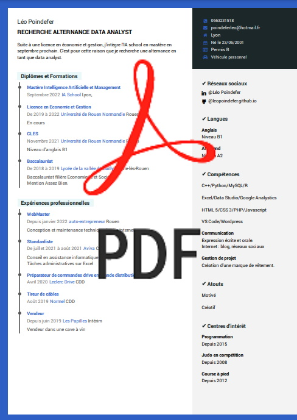

CONTACTEZ MOI
Télécharger mon CV

MON PARCOURS
Je suis en 3
ème année de licence d’économie et de gestion et je suis en parallèle passionné
par l’informatique et le codage. Actuellement à la recherche d’un stage, je me permets de vous
proposer ma candidature. L’objectif est de découvrir les métiers de l’intelligence artificielle,
plus précisément celui de data scientist, afin de mieux m’orienter. Les modalités sont les
suivantes : 1 jour en entreprise réparti sur 5 semaines, non rémunéré.
J’ai obtenu un baccalauréat en science économique et sociale, matières qui m’intéressent
grandement et qui me réussissent. J’ai décidé de poursuivre mon parcours scolaire en
conséquence. J’ai donc intégré l’Université d’Economie et Gestion de Rouen. Ce parcours
universitaire est très enrichissant d’autant plus que sont abordés les mathématiques et les
statistiques avec lesquelles je suis plus à l’aise, ce qui est un atout dans la data science.
Je possède de l’expérience dans le milieu professionnel. Je suis intérimaire depuis mes 18
ans dans une cave à vin, où j’effectue de la vente ainsi que de la manutention. J’ai ainsi pu
développer des qualités professionnelles comme la communication avec la clientèle, la force
de vente ainsi que la confiance en moi. J’ai également acquis de l’expérience dans la
préparation de commandes notamment en grande distribution chez Leclerc drive ainsi que
dans la préparation de commandes de fournitures scolaires chez Scoléo. J’ai ainsi pu devenir
tuteur et former les nouveaux entrants.
Ma motivation m’a permis d’évoluer dans ces milieux en étant le plus efficace possible.
Dernièrement, j’ai effectué pendant deux mois le métier de standardiste dans une grande
compagnie d’assurance, Aviva. Trois missions m’ont été confiées. Premièrement recevoir les
appels, les transférer aux services concernés, renseigner les clients. Deuxièmement effectuer
de nombreuses tâches administratives sur Excel. Et troisièmement être en renfort auprès du
service informatique en assistant les clients n’arrivant pas à se connecter au site internet de
l’entreprise.
J’ai pu, grâce à toutes ces emplois, développer le sens du travail, de la rigueur, la
communication avec la clientèle, la vente et l’esprit d’équipe.
Mon expérience en codage est un atout pour le stage demandé. En effet j’ai acquis en
autodidacte des notions en la matière. J’ai développé une véritable passion qui me permet
d’exprimer ma créativité sans limite.
J’ai commencé à apprendre le HTML 5 ainsi que le CSS 3 a l’âge de 15 ans. Par la suite, j’ai
dû très vite acquérir des notions solides du PHP MySQL afin de connecter mes premières
bases de données. Je me suis ensuite déporté vers un langage de programmation plus large,
le C++.